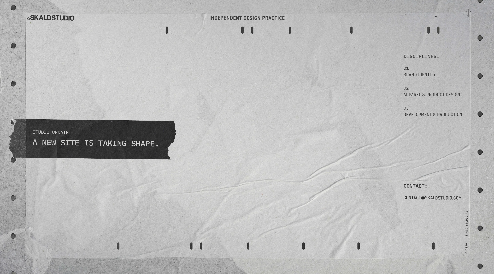
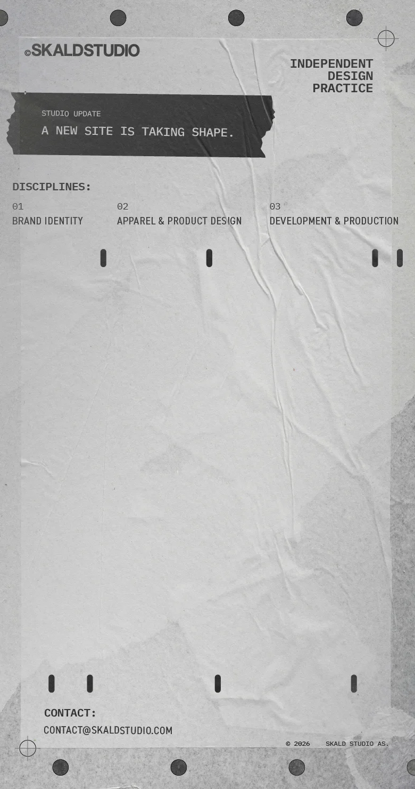

SKALD STUDIO
Independent design practice. Brand identity. Apparel and product design. Development and production. A new site is taking shape.


Independent design practice. Brand identity. Apparel and product design. Development and production. A new site is taking shape.

